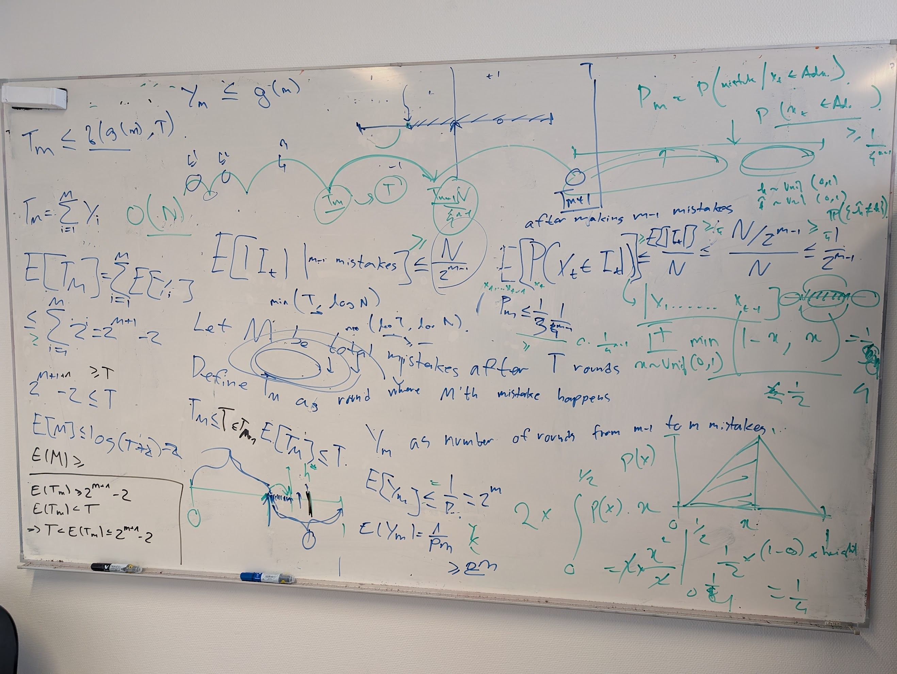

Foundations of Responsible Machine Learning
We are a research group at the University of Copenhagen developing principled methods at the intersection of privacy, robustness, learning theory, and generally all aspects of responsible machine learning.
Featured News
Amartya has been awarded DKK 7,198,686 for Data-Adaptive Privacy for Machine Learning at the University of Copenhagen. The grant comes through Independent Research Fund Denmark (DFF)’s thematic call on research in artificial intelligence (2026–2029).
Amartya has become an ELLIS Scholar!
Congratulations to Johanna, Vikrant, and Christian on their NeurIPS 2026 acceptances! Johanna's paper on adaptive private k-PCA was selected as a spotlight. Vikrant's paper on privately estimating monotone statistics and Christian's Lumberjack paper on differentially private random forests were also accepted.
Our paper on private question answering without private training was accepted to InfPriv: The New Landscape of AI Privacy, a workshop at NeurIPS 2026.
Amartya co-organised the Learning Theory Summer School and Workshop and the Workshop on Differential Privacy and Unlearning in Machine Learning in Copenhagen.
Giorgio's paper on learning-theoretic foundations for model collapse was accepted to ICML 2026. Luka and Vikrant's paper on why forget-only unlearning needs memorization was accepted to the Workshop on the Impact of Memorization on Trustworthy Foundation Models at ICML 2026.